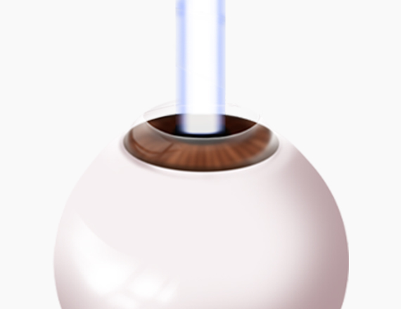
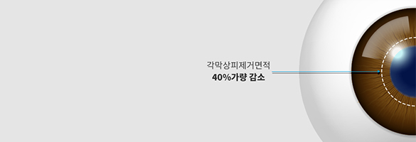
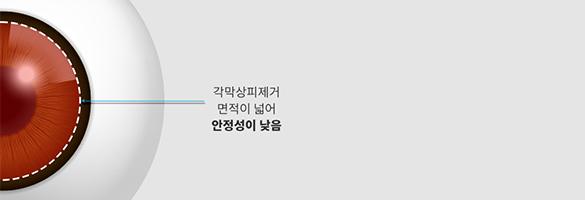

라섹 수술의 장점은 그대로 유지하며 단점을 보완한 수술

기존 라섹수술은 각막 상피를 제거하기 위해 알코올 또는
브러쉬를 사용하기 때문에 불가피한 화학적, 물리적
자극을 주고, 각막 상피 제거 면적이 넓습니다.
이로인해 통증이 심하고, 회복기간이 긴 단점이 있습니다.
올레이저 2DAY 라섹은 각막 상피 제거를 포함한 전 과정을
레이저로 시행하기 때문에, 기존 라섹에서 생기는 화학적,
물리적 자극이 없습니다. 또 필요한 만큼의 각막 상피만을
제거하므로 회복이 빠르고 통증이 적은 장점이 있습니다.
라섹 수술이 가지는 장점(높은 안전성, 적은 건조증)은
유지하면서, 라섹의 단점(심한 통증, 긴 회복기간)을 보완한
수술이 올레이저 2DAY 라섹입니다.


각막상피제거 면적을 최소화하기
때문에 적은 통증, 빠른 회복,
빠른 일상 복귀 가능
수술 전 과정 100% 올레이저
화학적 · 물리적 자극 낮음
경계면이 매끈하고 깨끗하게 만들어
교정 부위 외 각막을 건강하게 보존 가능
시력을 교정하는 원스텝 방식의 올레이저 장비로
레이저 중 가장 빠른 속도로 수술시간을 단축하고
정확한 수술을 하게 하는 엑시머 레이저

3D 입체 레이저
1050Hz의 빠른
레이저 절삭 속도
0.54mm의 작은
레이저 빔 사이즈
7D 안구추적장치
라섹 수술이 가능한 만 18세 이상 성인
선명하고 높은 시력의 질을 원하시는 분
심한 안구건조증으로 힘드신 분
평소 눈이 예민하고 충혈이 잘되는 분
각막이 얇아 라식 수술이 어려우신 분
스포츠, 레저 활동을 즐기시는 분
라섹 수술 후 빠른 회복을 원하시는 분

월 화 목 금
am 09:00 ~ pm 06:00토 요 일
am 09:00 ~ pm 04:00점 심 시 간
pm 01:00 ~ pm 02:00수요일, 일요일, 공휴일 휴무입니다.
공휴일 있는 주는 수요일 대체진료입니다.